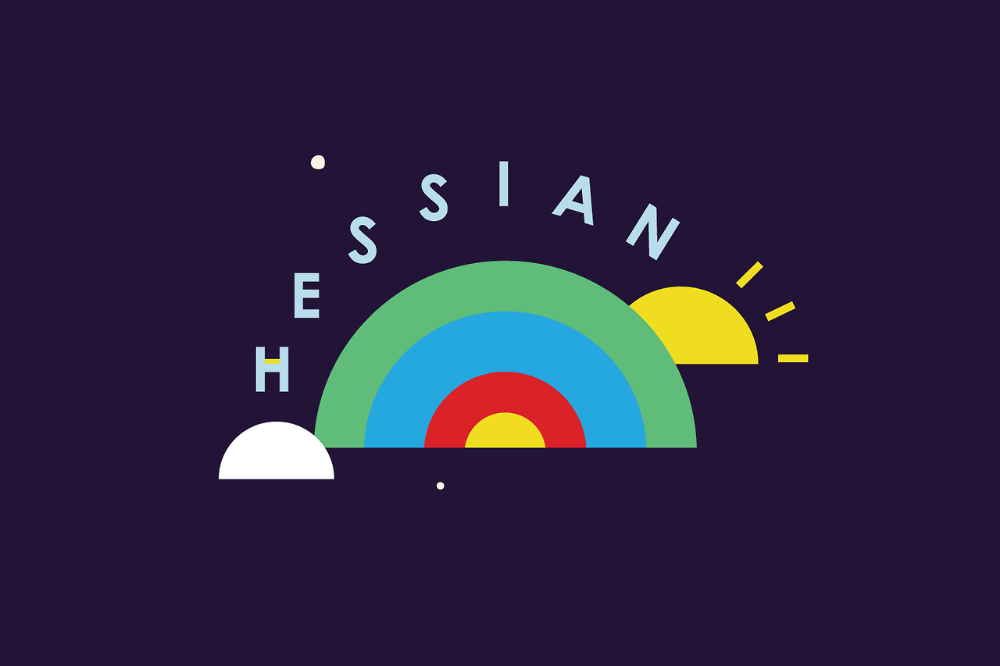

Hessian
"Products are made in the factory, but brands are created in the mind."
— Walter Landor
As an experiment Ben Pieratt, founder of Svpply went through the exercise of creating Hessian as visual brand without a product. For $18,000 the name, identity, Tumblr blog, and assets can be yours for your new restaurant, mobile app, teeshirt line, organic blueberry syrups or game development studio.
The idea, product and real branding work is all up to you, after all a brand is an experience living at the intersection of an expectation and a promise.